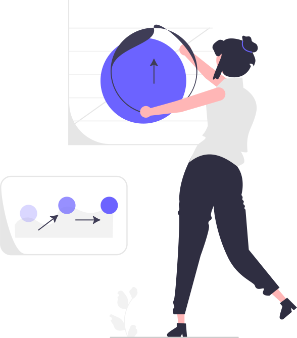

Tagesablauf
9:00 - 9:45 Uhr
Begrüßung und Rundgang durch den Campus
9:45 - 10:30 Uhr
Kennenlernen
10:30 - 12:00 Uhr
Was macht eine Service Designerin, UX Designerin und Product Ownerin?
12:00 - 13:00 Uhr
Mittagspause 🍕
13:00 - 15:00 Uhr
Was macht eine Software-Entwicklerin?
15:00 - 15:30 Uhr
Retrospektive und Abschluss
Erfahrungsberichte
Jobprofile

Service Design
- Nutzerbedürfnisse verstehen und mit geeigneten Methoden validieren
- Analyse von Marktbedingungen und Trends
- Neue Verbesserungsmöglichkeiten oder Geschäftsfelder identifizieren

UX Design
- Designs und interaktive Prototypen erstellen, um darzustellen, wie das fertige Produkt aussehen soll
- Unter Einsatz von Design-Prinzipien und Kreativität dafür sorgen, dass alle Nutzer das Produkt verstehen und Spaß daran haben (User Experience)

Product Owner
- Die Aufgaben klar formulieren und sortieren, sodass Ziele optimal erreicht werden können
- Entscheiden woran das Team als nächstes arbeiten wird
- Sicherstellen, dass die Software-Entwickler die Konzepte und Ziele verstehen

Software Entwicklung
- Die Funktionen und das Aussehen der digitalen Produkte in Programm-Code übersetzen, sodas sie nutzbar werden
- Gemeinsam mit dem Team unter Einsatz von Wissen und Kreativität an Problemen und Lösungen tüfteln
- Bestehenden Code verbessern oder ganz neue Technologien lernen und einsetzen